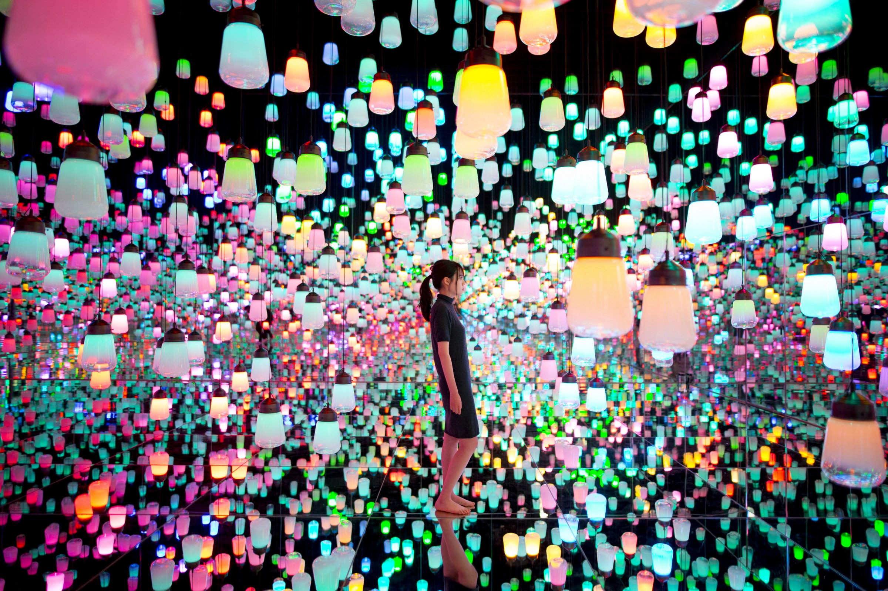

Demo (Recommend Chrome Browser)
This is my group project from CS 174A at UCLA with John Tran and Jonathan Liau
We created an virtual museum with webGL. Inside the museum, there will be something visually pleasing implemented with advanced graphics features. As a player, you can walk into the museum, and see something like this.
This is from Teamlab museum in Tokyo. A player can also interact with the arts. For example, clicking one of the light bulb above changes the color of that light bulb.